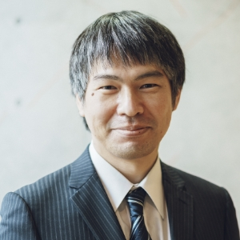
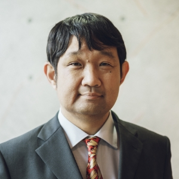

Three years ago, we engaged in passionate discussions toward the birth of KAKENHI Grant-in-Aid for Transformative Research Areas (B) “Combinatorial Reconfiguration.” With great ambition, we discussed, “I want to do this too,” and “For that, can we get this person to join us?” At that time, we incorporated into our proposal as many of the “ultimate” combinatorial reconfiguration we could conceive. Gratefully, the proposal was adopted in October 2020, and now, after 2.5 years have passed swiftly, we find ourselves in a world of combinatorial reconfiguration that far exceeds the imagination of those early days.
What we prioritized above all else was “connecting people” and “sowing seeds for the future.” Three years ago, some of us didn't even know each other's names, but we tackled research head-on, relying on the keyword of combinatorial reconfiguration. As a result, we have achievements we can proudly present, such as papers accepted at prestigious international conferences and academic journals, a patent application, and a press release issued. Nevertheless, what we are most proud of are the "invisible" outcomes that cannot be called achievements yet. Through organizing international workshops, international programming competitions, student symposiums, etc., we were able to deliver a new research perspective of combinatorial reconfiguration to researchers and students from around the world. This has not only deepened the research on combinatorial reconfiguration, but also sprouted new collaborative research projects here and there. Undoubtedly, they are “buds” that are difficult to obtain through individual research, even if it takes 10 years or ample funding.
Our “Combinatorial Reconfiguration” project comes to an end here. Nevertheless, we will continue to cherish and nurture the “buds” that we could not have obtained without this project. In the next 10 or 20 years, we aim to expand into the world of combinatorial reconfiguration that we still can't imagine today.
Profile
ITO, Takehiro Head Investigator of the project,
Principal Investigator of Group A01,
Professor at Tohoku University, Japan
Earned a Ph.D. in Information Science from Tohoku University in March 2006. He has worked on combinatorial reconfiguration, mainly using graph algorithmic methods.

KAWAHARA, Jun Principal Investigator of Group B01,
Associate Professor at Kyoto University, Japan
Earned a Ph.D. in Informatics from Kyoto University in March 2009. He has worked on algorithms and data structures, in particular combinatorial optimization using zero-suppressed binary decision diagrams (ZDDs).

OKAMOTO, Yoshio Principal Investigator of Group C01,
Professor at The University of Electro-Communications, Japan
Earned a Ph.D. from ETH Zurich in March 2005. He has worked on discrete mathematics, discrete algorithms, and discrete optimization.
KAKENHI Grant-in-Aid for Transformative Research Areas (B)
Research areas proposed by compact groups of researchers who will be bearers of the next generation of research with a smaller budget scale (about 3 or 4 groups), which aim to create research areas that will lead the way to radical transformation of and change in the existing framework and/or direction of research as well as upgrade and level-up of scientific research in Japan through more challenging and exploratory research, and expected to lead to the Transformative Research Areas (A) in the future.